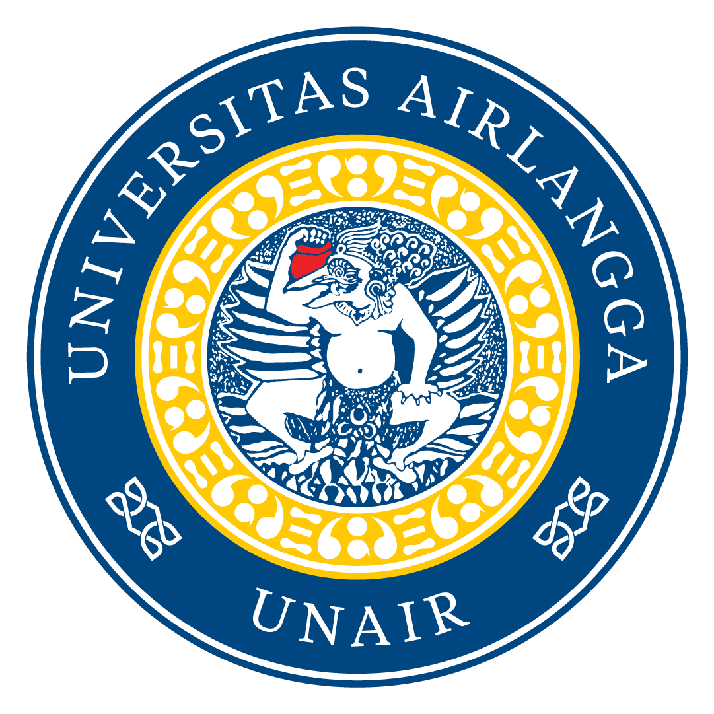

Berdirinya Universitas Airlangga tahun 1954, yang selanjutnya disingkat UNAIR, tidak dapat dipisahkan dari perjalanan panjang pendidikan tinggi di Indonesia. Cikal bakal perguruan tinggi di Indonesia itu adalah “Dokter Djawa School” (Sekolah Dokter Jawa), didirikan di Batavia tahun 1851.
Dalam perjalanan sejarah, lembaga itu direorganisasi menjadi School Tot Opleiding van Indische Artsen (STOVIA) tahun 1902. Sebelas tahun kemudian, berdasarkan Keputusan Pemerintah “Besluit van de Gouverneur van Netherlandsch Indie” Nomor 4211 tanggal 8 Mei 1913, didirikanlah Sekolah Dokter di Surabaya bernama Netherlandsch Indische Artsen School (NIAS). Berkedudukan di Jl. Kedungdoro 38 Surabaya. NIAS diresmikan tanggal 1 Juli 1913, sedangkan pendidikannya dimulai pada tanggal 15 Juli 1913. Tahun 1928 bahkan didirikan School Tot Opleiding van Indische Tandartsen (STOVIT) sebagai sekolah untuk kedokteran gigi.
Pada masa kolonial Jepang, baik STOVIA di Jakarta dan NIAS di Surabaya ditutup tahun 1942, kemudian dilebur menjadi “Ika Dai Gaku”. Setelah berakhirnya kekuasaan Jepang tahun 1945, pemerintah RI mengambil alih dan mengganti namanya menjadi Perguruan Tinggi Kedokteran RI. Namun pada masa agresi Belanda perguruan itu ditutup, dan tahun 1948 diganti dengan Faculteit der Geneeskunde Cabang Surabaya sebagai cabang Fakultas Kedokteran Universitet Indonesia.
Barulah kemudian berdasarkan Peraturan Pemerintah RI Nomor 57 Tahun 1954 tentang Pendirian Universitas Airlangga per tanggal 1 November 1954, Fakultas Kedokteran dan Lembaga Ilmu Kedokteran Gigi di Surabaya dipisahkan dari “induknya” yaitu Universitet Indonesia. Pada tanggal 10 November 1954 Presiden RI Dr. Ir. Soekarno meresmikan berdirinya Universitas Airlangga sebagai Perguruan Tinggi Negeri (PTN) ketiga di Indonesia setelah Universitas Indonesia dan Universitas Gadjah Mada.
Pada saat pendiriannya, Universitas Airlangga sebagai PTN pelopor di kawasan Indonesia Timur terdiri atas lima fakultas, yaitu Fakultas Kedokteran, Fakultas Kedokteran Gigi, Fakultas Hukum yang berkedudukan di Surabaya (Cabang FH UGM), Fakultas Keguruan dan Ilmu Pendidikan berkedudukan di Malang, dan Fakultas Sastra yang berkedudukan di Denpasar-Bali. Dari lima fakultas pendiri UNAIR tersebut, dua fakultas sudah ada sebelum Perang Dunia I, yaitu Fakultas Kedokteran berasal dari NIAS tahun 1913 dan Fakultas Kedokteran Gigi yang berasal dari STOVIT tahun 1928.
Pemberian nama Airlangga, karena Airlangga yang artinya “Sang Pemelihara” adalah seorang raja sangat terkenal pada Abad XI. Raja yang arif dan bijaksana, cakap, dan mampu mempersatukan wilayah di kawasan Timur Indonesia.
Dalam perjalanan waktu, Fakultas Keguruan dan Ilmu Pendidikan di Malang berkembang sebagai embrio berdirinya Institut Keguruan Ilmu Pendidikan (IKIP) Malang dan kini menjadi Universitas Negeri Malang (UM). Sedangkan Fakultas Sastra di Denpasar kemudian melepas diri dari Universitas Airlangga dan menjadi bagian dari sejarah berdirinya Universitas Udayana.
Universitas Airlangga terus berkembang dengan menambah fakultas baru, yaitu Fakultas Ekonomi (1961) yang berasal dari Sekolah Tinggi Ekonomi Surabaya. Saat ini berubah menjadi Fakultas Ekonomi dan Bisnis. Fakultas Farmasi (1964), Fakultas Kedokteran Hewan (1972), Fakultas Ilmu Sosial dan Ilmu Politik (1977), Fakultas Matematika dan Ilmu Pengetahuan Alam (1982) saat ini menjadi Fakultas Sains dan Teknologi, Fakultas Pascasarjana (1982) kemudian berubah nama menjadi Program Pascasarjana dan saat ini menjadi Sekolah Pascasarjana. Fakultas Non Gelar Kesehatan (1984), tetapi kemudian ditiadakan dan diintegrasikan ke dalam Fakultas Kedokteran, Fakultas Kedokteran Gigi, dan Fakultas Kesehatan Masyarakat yang berdiri tahun 1993.
Fakultas Psikologi (1993), Fakultas Sastra (1998) yang sejak 2008 berubah menjadi Fakultas Ilmu Budaya. Berdirinya Fakultas Keperawatan (2008) sebagai pengembangan dari Program Studi Ilmu Keperawatan pada Fakultas Kedokteran Universitas Airlangga, serta Fakultas Perikanan dan Kelautan (2008) sebagai pengembangan dari Program Studi Budidaya Perikanan pada Fakultas Kedokteran Hewan. Fakultas Vokasi berdiri pada tahun 2014. Sebelumnya, beragam program studi vokasi (diploma) dilaksanakan di bawah koordinasi fakultas lain.
Fakultas Teknologi Maju dan Multidisiplin (FTMM), yang semula bernama Sekolah Teknologi Maju dan Multidisiplin, didirikan pada November 2019 dengan 5 program studi S1, antara lain: Teknik Robotika dan Kecerdasan Buatan, Teknologi Sains Data, Rekayasa Nanoteknologi, Teknik Industri, dan Teknik Elektro. FTMM hadir dan melengkapi 3 pilar utama Universitas Airlangga (social science, life science, dan health science) dengan pilar baru di bidang keteknikan (engineering).
Universitas Airlangga memperoleh status Perguruan Tinggi Negeri (PTN) Badan Hukum Milik Negara (BHMN) berdasarkan Peraturan Pemerintah (PP) Nomor 30 Tahun 2006 tentang Penetapan Universitas Airlangga sebagai Badan Hukum Milik Negara (BHMN). Kemudian berdasarkan Undang-Undang Pendidikan Tinggi Nomor 12 Tahun 2012 Universitas Airlangga termasuk diantara tujuh PTN-BHMN yang berhak menyandang statuta sebagai PTN Badan Hukum (PTN-BH). Selanjutnya statuta Universitas Airlangga sendiri telah turun berdasarkan Peraturan Pemerintah Republik Indonesia Nomor 30 Tahun 2014 tentang Statuta Universitas Airlangga.